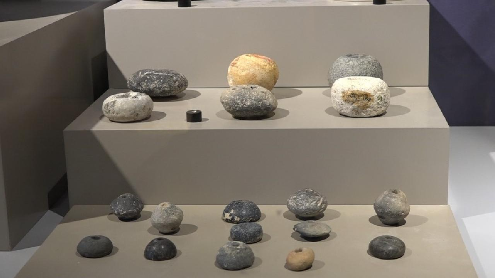

Müze Hakkında
Tunceli Müzesi, bölgenin kültürel ve tarihi mirasını sergileyen bir müzedir. Zengin arkeolojik ve etnografik koleksiyonları ile ziyaretçilere bölge tarihini sunar.
Tunceli Müzesi, bölgenin kültürel ve tarihi mirasını sergileyen bir müzedir. Zengin arkeolojik ve etnografik koleksiyonları ile ziyaretçilere bölge tarihini sunar.


